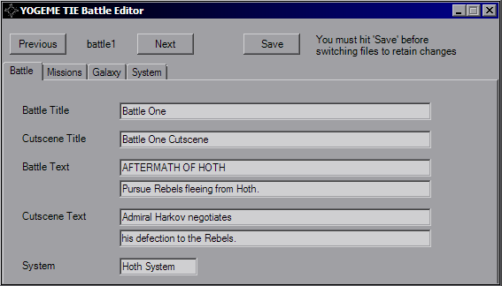
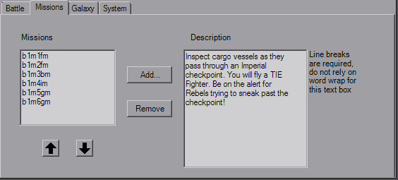
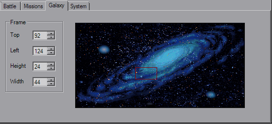
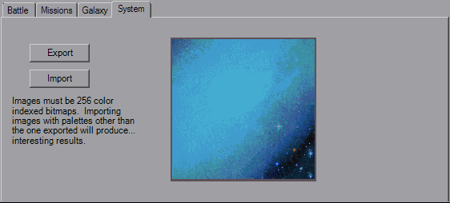

Battle Dialog
Opening the Battle Dialog will bring you to the main Battle tab.

This dialog edits the "Battle#.LFD" files in your TIE installation's RESOURCE directory. If you're editing missions without TIE installed by disabling the enforcement option, then sorry, you won't be able to use this. YOGEME needs those LFD files so it can edit them, as well as the galaxy image on the Galaxy tab. If YOGEME can't find your TIE install, the Battle dialog will close with a message box telling you it's not going to cooperate.
Use the Previous and Next buttons to flip between battles, although for custom missions I owuld imagine you'd be primarily using the first, which is loaded by default. As written on the form, you have to use the Save button to keep your changes before closing the dialog or switching battle files. This is because YOGEME loads directly from the files and does not store a local copy.
The first tab as you can see is mainly for the strings. The Battle * strings are shown in the Concourse when selecting a battle, the Cutscene * strings are shown in the Combat Chamber when selecting Historical missions, and the System string is the one shown when the Concourse map zooms in.

This tab simply puts together the list of missions that involved in the battle and includes a description of each mission that will be shown i nthe Combat Chamber. The arrow buttons can be used to reorder the list, the Add... and Remove buttons as one might expect allow you to *gasp* add and remove missions from the list. As was the case for the mission's briefing questions, the decription does not have word wrap, so you must manually enter line breaks. Double check in-game to make sure you don't have any mission characters.

This tab controls where the box on the galaxy map in the batle selection Concourse is placed and its size (it's brighter than in the pic). Use the num-boxes to change the size and click-drag the box to move it around. You cannot drag the box past the edge of the galaxy image, YOGEME will stop you.

Really nothing to this tab by itself, it lets you change the system image.
Now, the way images work in TIE is the color palette is defined elsewhere and is applied to everything (that's the simple version). When you export this system image, it will be a 256-color bitmap with the correct color palette. If the image you're loading does not have that same color palette, with the same indexes, the image will not have the colors you are expecting.
The original palette will be applied as soon as the image is loaded, and it will be converted to the correct 256-color format when the file is saved. After that point you may switch away from and then back to the battle as a sanity check for when it re-reads the file, and finally it's best to make sure it's okay in-game as a lot of the time transparent (index 00) will share a color definition with black, and image editors may group them together. I like using blue (#0000FF) as my transparent color instead of magenta in my editors to separate it from black, just try and set it to an unused color so you don't get it grouped in by accident.